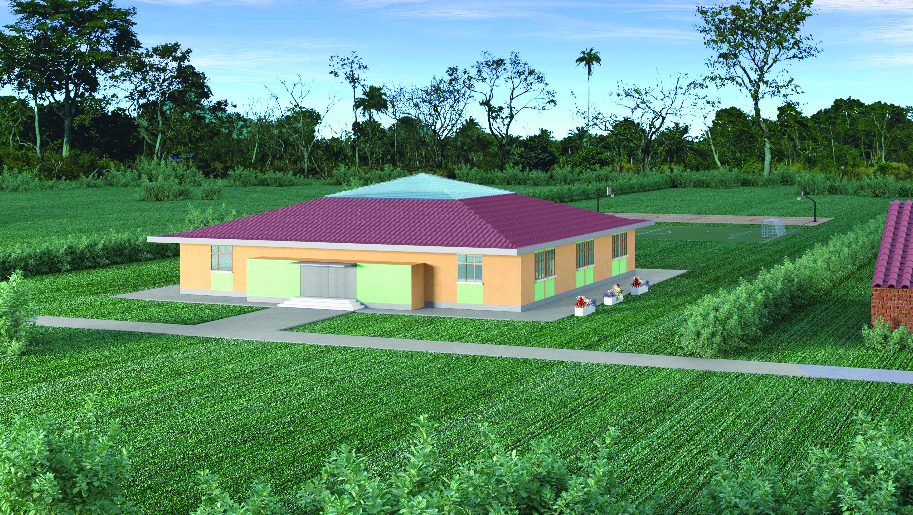
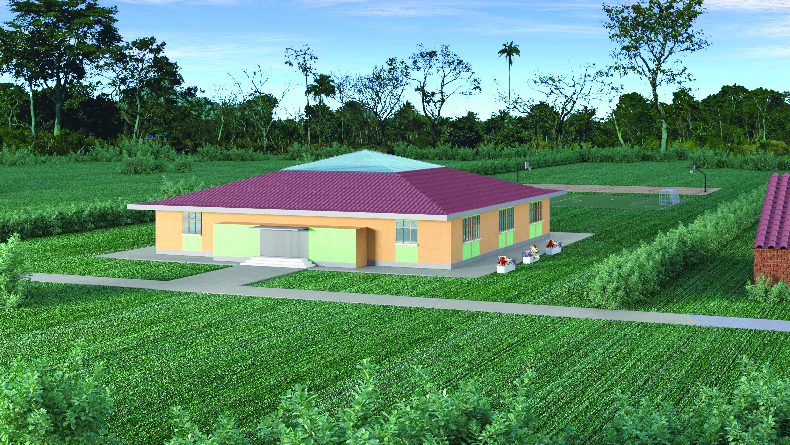

GRUPPO NAIROBI
Who We Are
Gruppo Nairobi is a dedicated non‑profit organization with a bold vision – to build an elementary school to offer quality education to children in need. Education is the key to a brighter future.
Where
The school will be built in Kenya, approximately 90 km from Nairobi, in the Municipality of Ngunga Paris within the Machakos District.
Why
The inspiration for this project came from Sister Hitha, a cherished mentor. Now in Kenya, she leads a dedicated team committed to providing educational opportunities.
Project Details
The proposed primary school will feature six classrooms, built on land donated by a local congregation of nuns. An estimated investment of €180,000 is required.
 

Our Appeal
We are passionately committed to making this project a reality, but we cannot do it alone. Join us in building this school.
The Association
- President: Mazza Pierdomenico
- Vice President: Abela Franco
- Administrator: Rinaldi Mattia